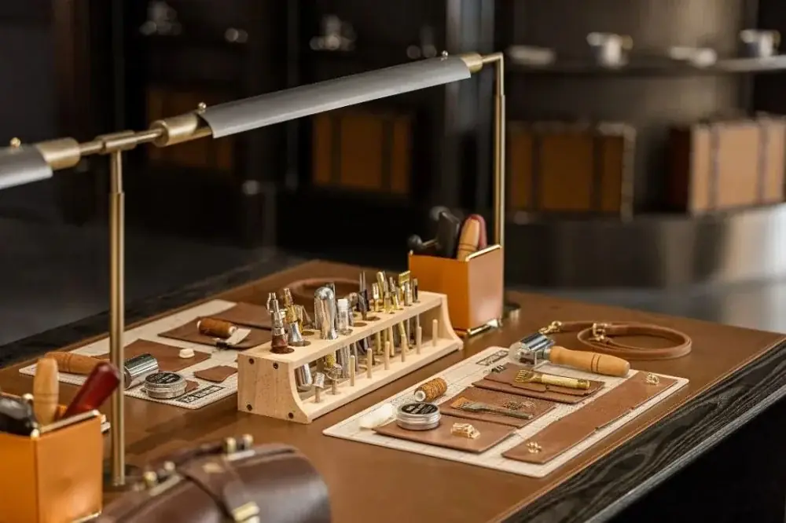
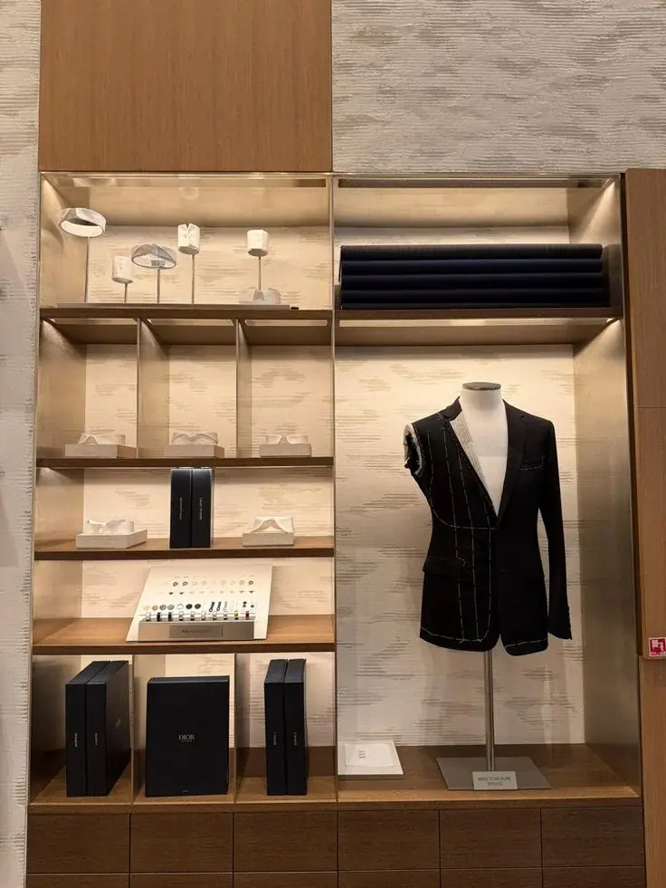

Contents · 目录
02 / 25
Navigation · 叙事结构
目录
01
项目背景
03—06
02
项目分析
07—19
03
分析结论
20—22
04
总结
23—25

从品牌根基，到空间叙事
Content Index
Part A · Old Money Core
09 / 25
Only We Possess · 从容的底气
克制与秩序，
让时间成为质感。
“老钱风”的内核不是昂贵，而是只有长期积累者才拥有的从容。
秩序
古典对称与轴线，只保留一个历史焦点。
RITUAL
时间
洞石、胡桃木、柚木与做旧金属，越用越有魅力。
PATINA

融合历史沉淀与老钱风
Restraint · Order · Patina
Part B · Zone 04
17 / 25
Technology as a Precious Object
工艺透明
剧场
用皮箱、面料内衬、黄铜放大镜与穿针装置，引导客户探索纤维微距结构。
放大
呈现 0.1 弹力丝与纱线结构。
MICRO
拆解
核心技术模型、原料与设计手稿。
ANATOMY
时间轴
四大系列的技术里程碑。
MILESTONE



04 · 工艺透明剧场
Performance, Translated
Unknown Design · Closing
25 / 25
Thank You · 感谢观看
Be Ingenuity.
Be Creative.
以匠心回应时间，以创意打开未来。

All rights of interpretation belong to Unknown Design.
Be Ingenuity · Be Creative